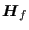
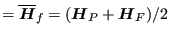
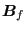

Keyword type: model definition
With this card a rigid body can be defined consisting of nodesor elements. Optional parameters areREF NODE and ROT NODE.
One of the parameters NSET or ELSET is required. Use NSET to define arigid body consisting of the nodes belonging to a node set and ELSETfor a rigid bodyconsisting of the elements belonging to an element set. In the latter case, the rigid bodyreally consists of the nodes belonging to the elements. The parametersNSET and ELSET are mutually exclusive. The rigid bodydefinition ensures that the distance between any pair of nodesbelonging to the body does not change during deformation. Thismeans that the degrees of freedom are reduced to six: threetranslational and three rotational degrees of freedom. Thus, the motion is reducedto a translation of a reference node and a rotation about that node.
The reference node can be specified by the parameter REF NODE andshould have been assigned coordinates using the *NODEcard. The reference node can belong to the rigid body, but does notnecessarily have to. Notice, however, that if the reference node belongs tothe rigid body any forces requested by specifying RF on a *NODE PRINT cardwill not be correct.
For the rotational degrees of freedom a dummy rotational node is usedwhose translational degrees of freedom are interpreted as therotations about the reference node. Thus, the first degree of freedomis used as the rotation about the x-axis of the rigid body, the secondas the the rotation about the y-axis and the third as the rotationabout the z-axis. Therotational node can be defined explicitly using the parameter ROTNODE. In that case, this node must be been assigned coordinates (their valueis irrelevant) andshould not belong to any element of the structure.
In the absence of any of the parameters REF NODE or ROT NODE, extranodes are generated internally assuming their tasks. The position of thedefault REF NODE is the origin. However, definingthe nodes explicitly can be useful if a rotation about a specificpoint is to be defined (using *BOUNDARY or*CLOAD), or if rigid body values (displacements orforces) are to be printed using *NODEPRINT. Notice that a force defined in a rotational nodehas the meaning of a moment.
Internally, a rigid body is enforced by using nonlinear multiple pointconstraints (MPC).
If the participating nodes in a rigid body definition lie on astraight line, the rigid body rotation about the line is not definedand an error will occur. To remove the rotational degree of freedom,specify that the rotation about the axis is zero. If  is aunit normal on the axis and  is the displacement of theROT NODE, this results in a linear MPC of the form  to be specified by the user by means of a*EQUATION card.
First and only line:
Example: *RIGID BODY,NSET=rigid1,REF NODE=100,ROT NODE=101
defines a rigid body consisting of the nodes belonging to node setrigid1 with reference node 100 and rotational node 101.
Using
*CLOAD 101,3,0.1
in the same input deck (see *CLOAD) defines a moment about the z-axis of 0.1 acting on the rigid body.
Example files: beamrb.